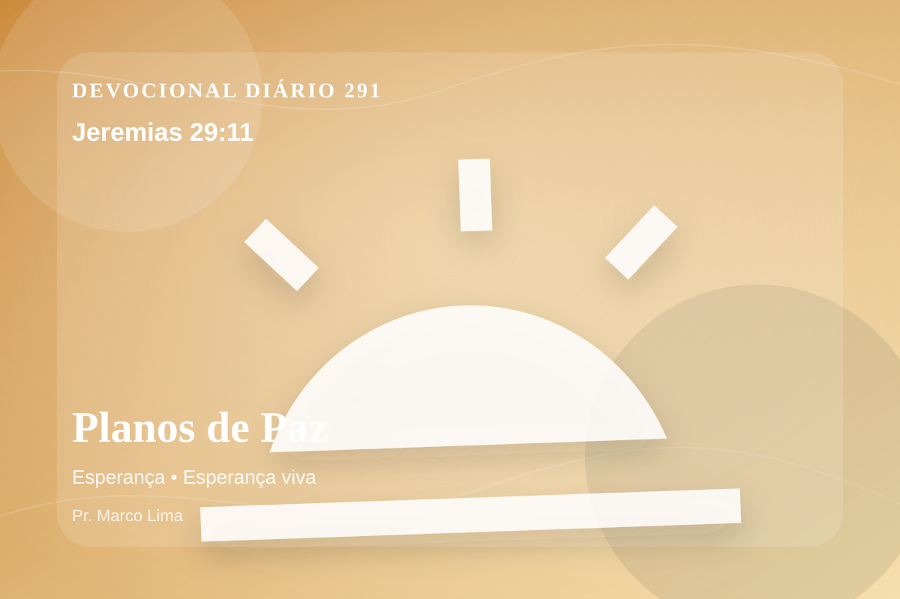

Planos de Paz
Pois eu bem sei os planos que estou projetando para vós, diz o Senhor; planos de paz, e não de mal, para vos dar um futuro e uma esperança.
Pensamento
Ao meditar em Jeremias 29:11, não procure apenas conforto rápido; permita que Deus ensine, corrija, console e chame você para mais perto de Jesus.
A esperança dada por Deus nasce em contexto de espera, disciplina e exílio. Seus planos não alimentam pressa egoísta; sustentam confiança quando o caminho ainda é longo.
O tema de esperança precisa ser recebido com simplicidade e seriedade. A maturidade cristã começa quando a Palavra deixa de ser apenas inspiração e passa a governar escolhas. A esperança cristã não é otimismo religioso, mas confiança fundamentada no caráter fiel de Deus. Ela permite atravessar a espera sem abandonar a fé, porque olha para as promessas do Senhor acima das circunstâncias.
Talvez o maior desafio de hoje não seja entender o versículo, mas permitir que ele exponha o que precisa ser entregue. Deus cura com verdade, não com distração espiritual.
Arrependimento não é apenas sentir peso na consciência; é voltar-se para Deus, abandonar o caminho que entristece o Senhor e confiar que a graça de Cristo é suficiente para perdoar e transformar.
Este é o evangelho que sustenta toda aplicação: Jesus Cristo morreu pelos pecadores, ressuscitou em vitória e chama cada pessoa a responder com fé, arrependimento e uma vida rendida ao Seu senhorio.
A salvação não nasce do esforço humano, mas da graça de Deus em Jesus. Quem crê não precisa fingir força; pode se render, confessar e recomeçar.
Antes de terminar, ore com simplicidade: “Senhor, mostra onde preciso me arrepender e dá-me fé para obedecer”. Depois, pratique o que Deus já deixou claro.
Para Praticar Hoje
- Leia Jeremias 29:11 lentamente e destaque uma palavra ou expressão central do texto.
- Confesse a Deus um pecado, resistência ou frieza espiritual que esta Palavra revelou.
- Declare sua fé em Jesus Cristo e pratique hoje uma atitude concreta de arrependimento e obediência.
Oração
Senhor Deus, eu recebo a Tua Palavra em Jeremias 29:11 com reverência. Reconheço que preciso de arrependimento, perdão e nova vida. Creio que Jesus Cristo morreu pelos meus pecados e ressuscitou para me salvar. Lava meu coração, governa minha vida e conduz-me em obediência simples ao Teu evangelho. Em nome de Jesus. Amém.
{kind=link}